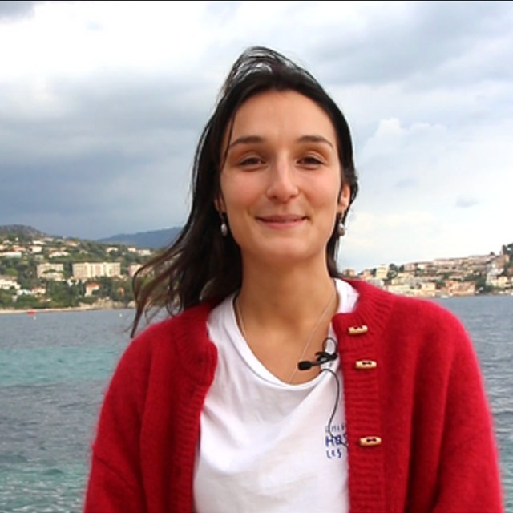

Marine JAUMON
PhD Student at CEREGE and LOV, France
Bonjour !
I am a PhD student co-supervised by Olivier Sulpis (CEREGE) and Steeve Comeau (LOV). My work focuses on how biogenic calcium carbonate forms and dissolves under environmental changes, with a particular emphasis on coral and reef ecosystems.
I completed a BSc in Environmental and Physical Geography at the University of Montreal and after graduating, I joined the Aquarium of Guadeloupe for a civic service program, where I was raising awareness about marine biodiversity among children and adults, and worked on coral restoration projects involving Favia fragum. I then pursued a Master's degree in Marine Sciences, focusing on Marine Biology and Ecology at the University of Bordeaux, where I developed an interest in biogeochemistry. This led me to an M2 internship with Olivier, studying the effect of microbial respiration on carbonate dissolution, along with fieldwork in Bermuda at BIOS.
When I'm not in the lab, you'll probably find me in the ocean looking for sea creatures, diving, or attempting to surf. I also love hiking and reading with a good cup of coffee.
Meet the other team members